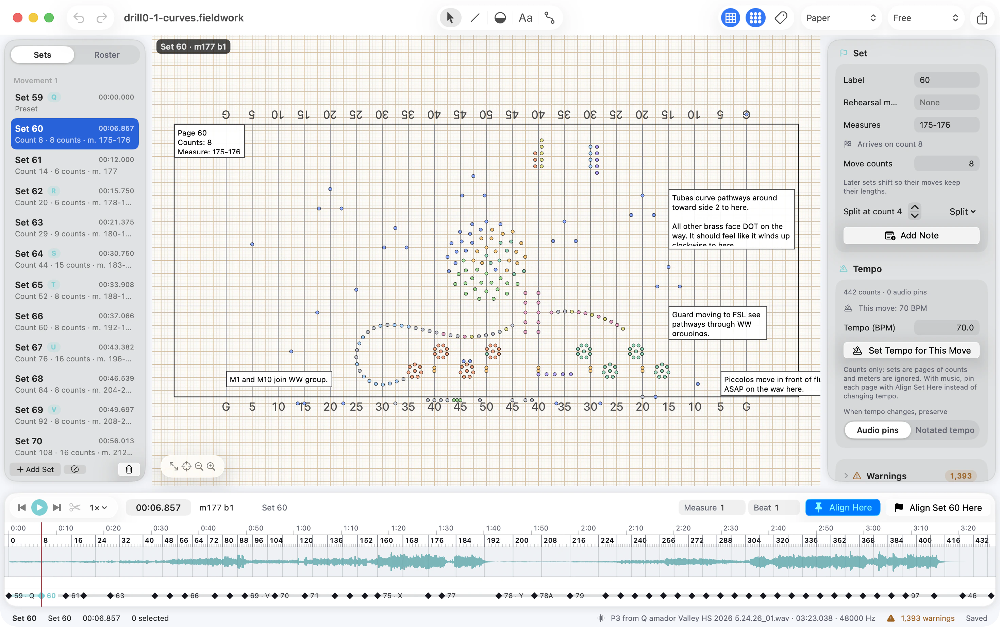
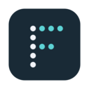
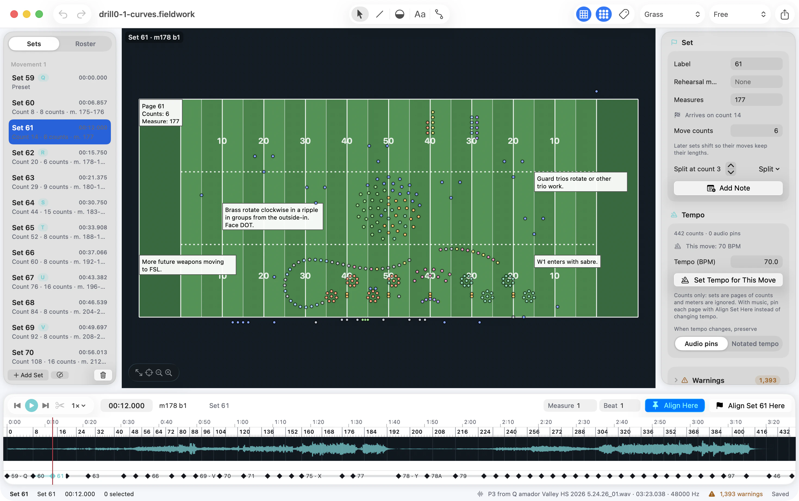
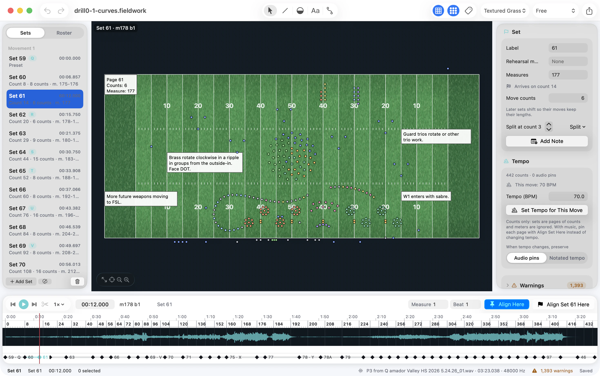
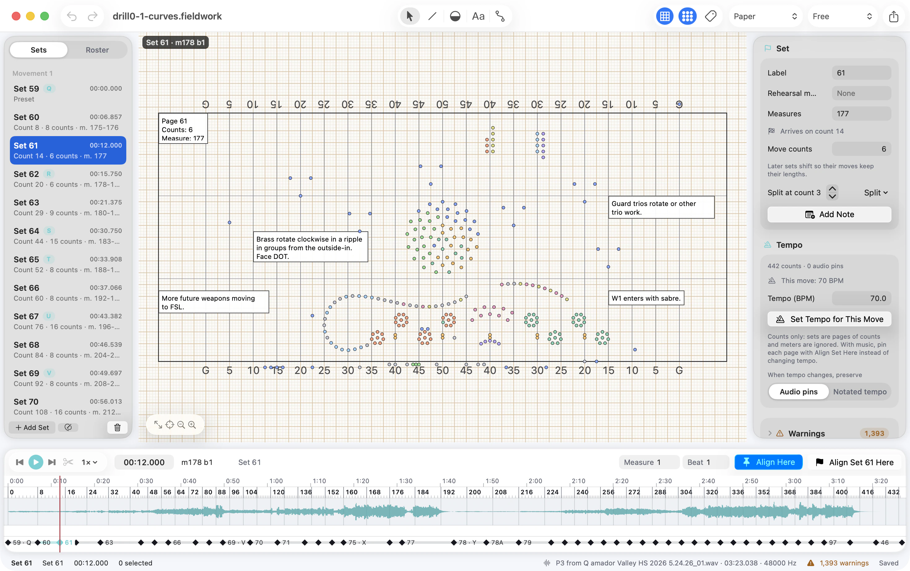
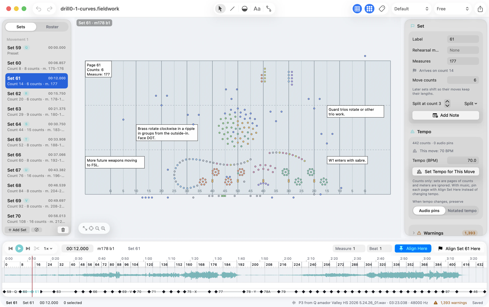
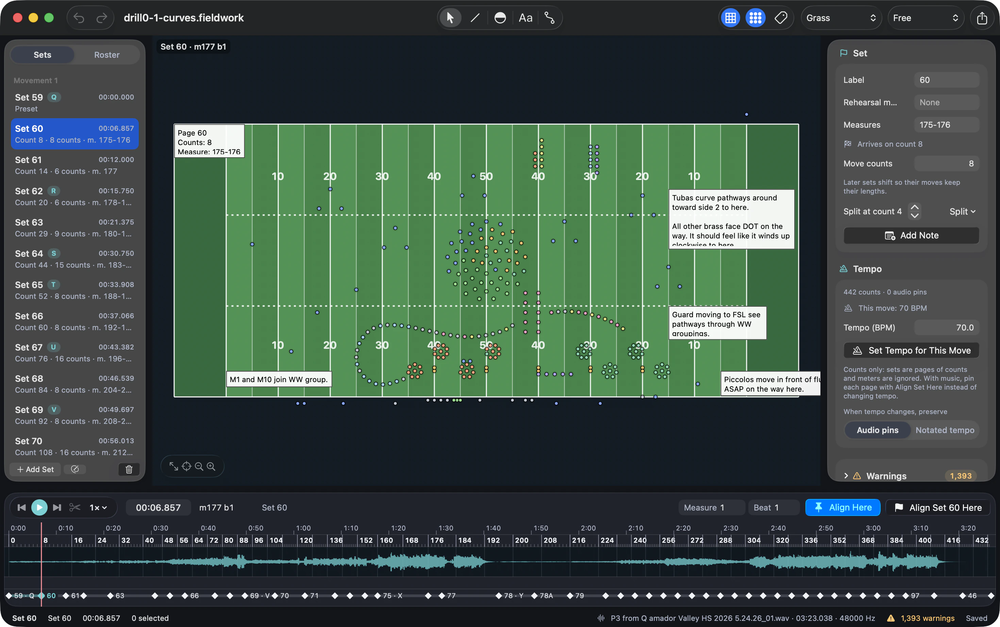
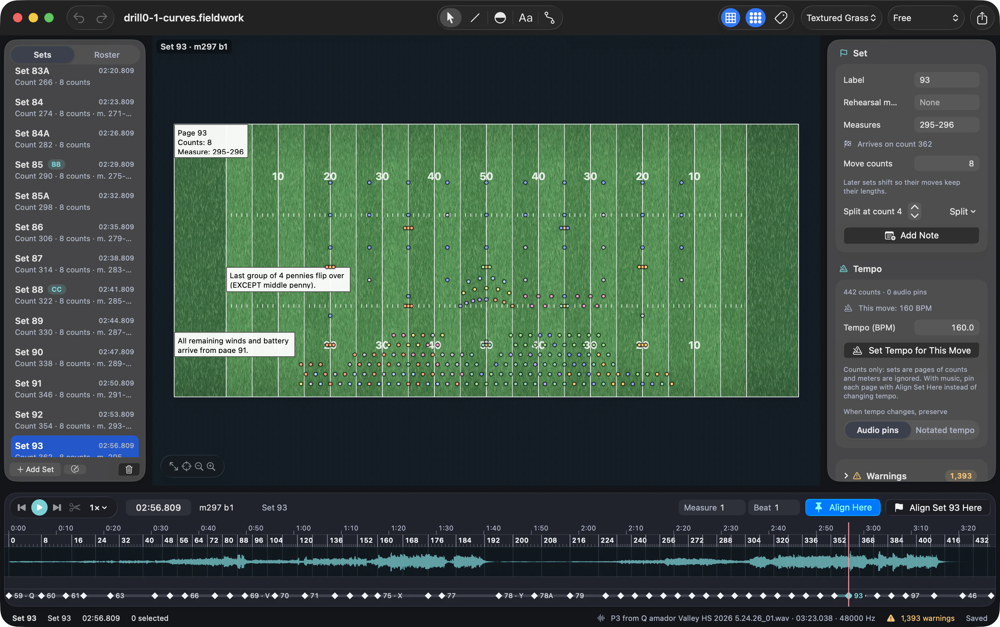
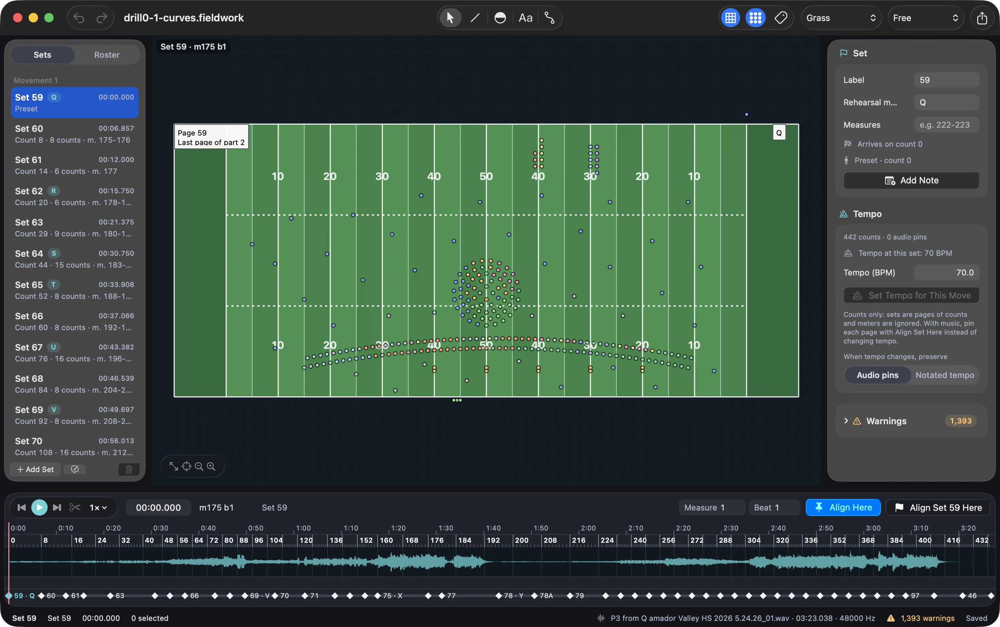
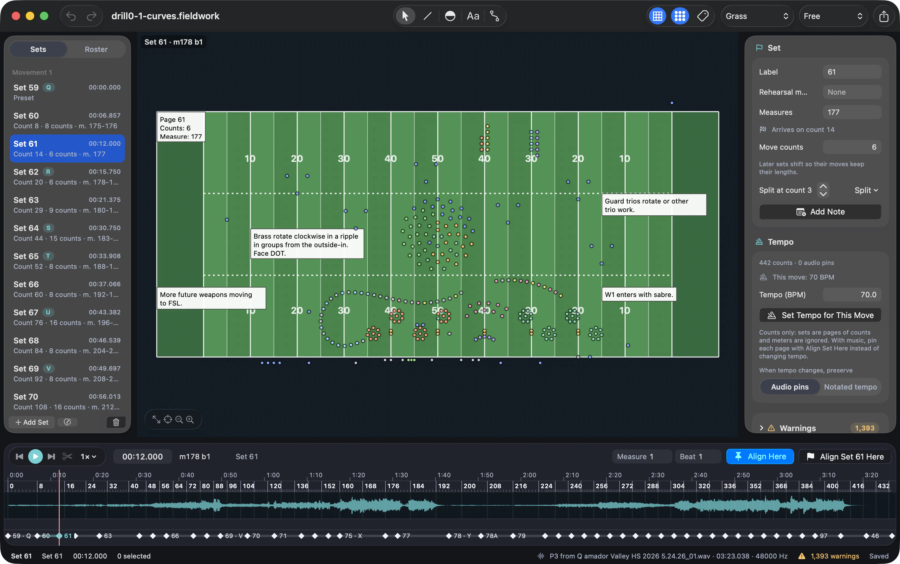

Formation editing
Give your ideas
some shape.
Work directly on the field, with performers and formations at the center.


FieldworkFieldwork · Marching drill design
A clear field. A precise workspace.
Everything you need to shape the next set.
Built for Mac. Made for the field.




Your field. Your formations. Your next move.
01 / THE WORKSPACE
From the shape of a phrase to the next eight counts. Keep the whole show in view.
Formation editing
Work directly on the field, with performers and formations at the center.

Set navigation
Move through pages with labels, rehearsal marks, and counts close at hand.

Timing & playback
Use the timeline to find your place and inspect the transition.

02 / FIND YOUR FLOW
01 / Start with the picture
Begin with Set 59. The field, your performers, and the structure of the show share one workspace.


Select Set 60 in the navigator. The field and inspector follow, with the eight-count move in context.
Continue to Set 61. Its six-count move and arrival position stay connected to the same timeline.
03 / ROOM TO CREATE
A focused workspace for the details that make a formation work.
Select performers on the canvas. Shape lines and arcs, adjust positions, and keep the field as your point of reference.
04 / MAKE IT YOURS
Four field styles, in light or dark. Pick the one that reads best for the way you work.
Mowed grass with white lines and yard numbers. The field the way your performers see it.
Choose a field style from the toolbar or View › Field Style. The rest of the window follows your Mac’s light or dark appearance.
05 / A CLOSER LOOK
Take a look around.
Select a marker to get your bearings.
The show, one set at a time. Find a page by its label, rehearsal mark, or count, then select it to bring that formation into view.
Undo and redo are part of the editing workflow. Make an adjustment, see how it reads, and refine from there.
Save and reopen your work as a .fieldwork document. A familiar home for the formations you’re working on.
06 / GOOD TO KNOW
A closer look at the app behind the formations.
Fieldwork is a marching drill design app. Its workspace brings together a field canvas, performer and formation editing, set navigation, timing, and playback.
Fieldwork has a native Mac workspace for designing formations, navigating sets, and reviewing movement on the field.
Select a set in the navigator to bring its formation into view. Labels, rehearsal marks, and counts help you find your place, while the inspector shows the details of the selected set.
Work with an audio waveform, playhead, and set markers in one timeline. Use the playback and alignment controls to review how your formations relate to the music.
Yes. Choose Default, Grass, Textured Grass, or Paper from the toolbar or View › Field Style. The field style is a personal view preference, so it never changes the show file, and the window follows your Mac’s light or dark appearance.
Save your show as a .fieldwork document and reopen it in the Mac app to keep working on your formations.
Release details are coming. In the meantime, explore the workspace and get a feel for designing your next show in Fieldwork.
Make room for the formation you have in mind.
Explore Fieldwork